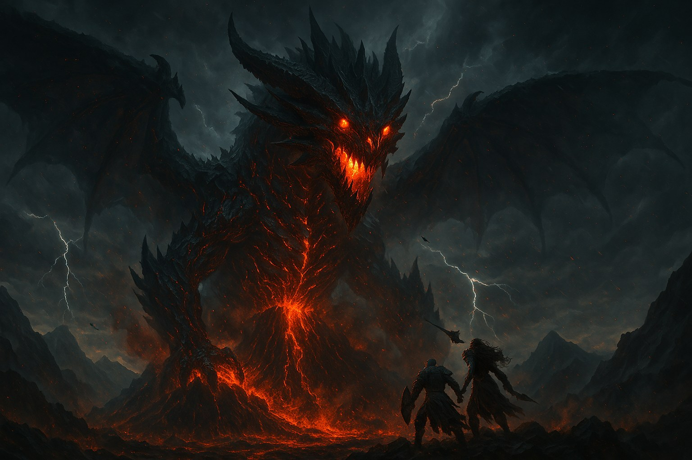
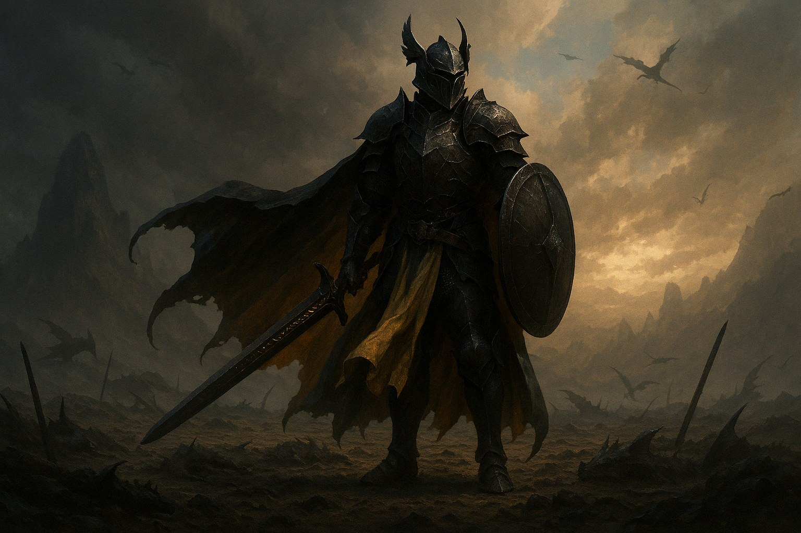
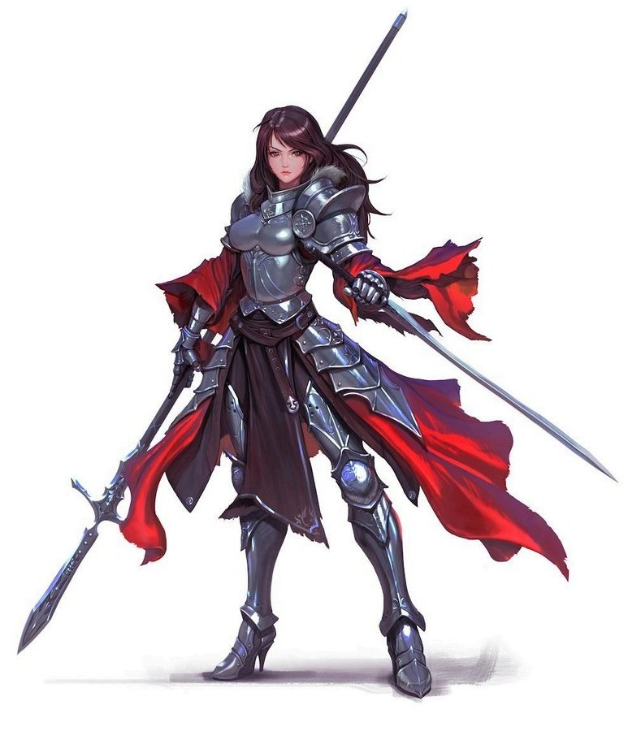
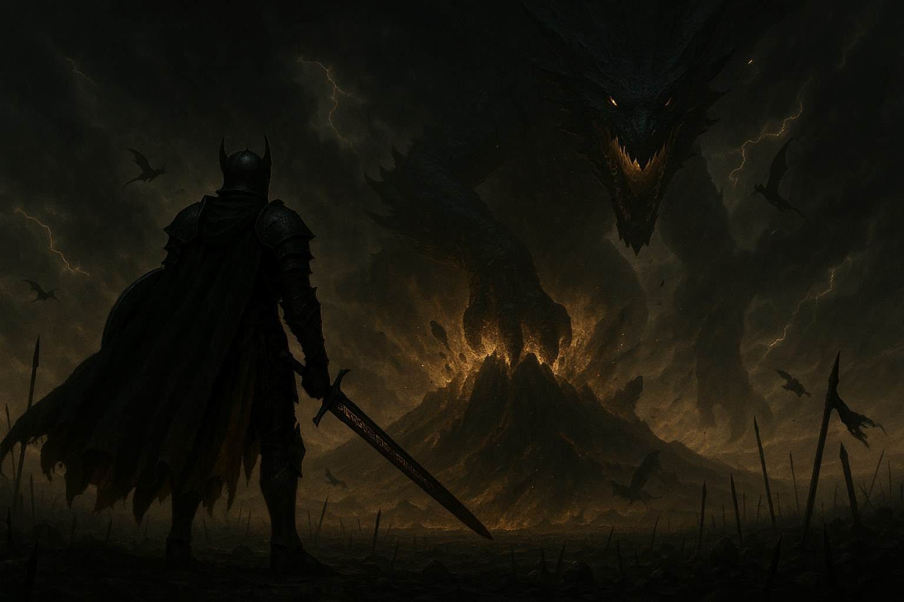

Belford
Onde o céu arde e a honra vive. Em um continente onde dragões não são lendas — são ameaças vivas. Quatro reinos, um andarilho, e um deus-dragão que despertou.
Ler Mais
Explore contos de bravura, magia e mistério.
Onde o céu arde e a honra vive. Em um continente onde dragões não são lendas — são ameaças vivas. Quatro reinos, um andarilho, e um deus-dragão que despertou.
Ler MaisTerra da Casa Dervayn e das escamas cristalizadas. Foi aqui que Eve desenvolveu habilidades de manipulador.
Em breveLar dos Anéis de Orinn, que detêm o monopólio sobre as espadas forjadas em Kheltan.
Em breveUma terra de magias antigas. Seus magos acompanham os navios que partem do Porto de Irus.
Em breveNo extremo oriente, além das rotas conhecidas.
Em breve
Reprovado e humilhado, treinou oito anos dentro da carcaça de um dragão de cinco mil anos — equivalente a apenas dois no mundo real.
Ler Mais
Sem treinamento e sem permissão, forjou sua primeira lâmina com as mãos em carne viva. Hoje, quem ria dela espera suas ordens em silêncio.
Ler Mais
Os dragões começaram a cair do céu. Algo estava caçando os próprios dragões — e os três reinos se uniram pela primeira vez em séculos.
Ler Mais
Ele não surgiu. Ele acordou. Selado pelos próprios dragões ancestrais no céu mais alto, caiu como uma estrela maldita sobre o Monte Othram.
Ler Mais
Escamas, cristais de energia e troféus de dragão: as rotas, guildas e tratados que movem um continente sob asas de fogo.
Ler Mais